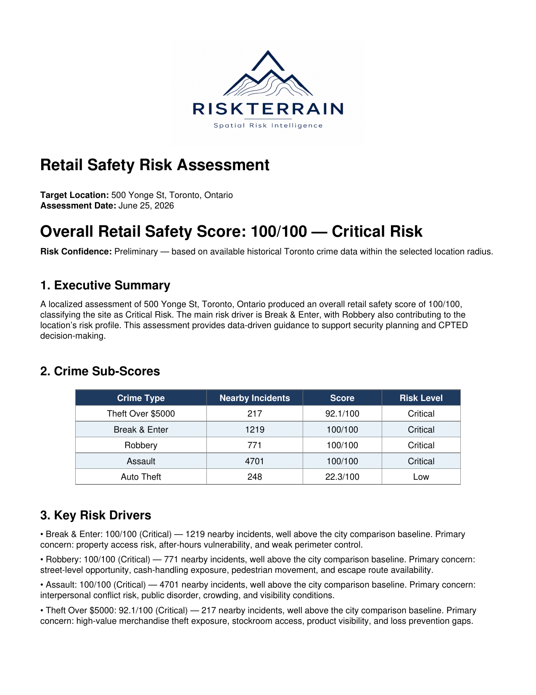

Organizations with multiple locations struggle to decide which sites need security attention first. RiskTerrain simplifies that decision by turning crime data into explainable risk rankings, CPTED-informed recommendations, and professional reports.
Designed to help organizations prioritize which locations need security attention first. Enter a location or upload multiple sites to generate explainable risk scores and professional reports.
Enter a Toronto address or upload multiple locations. RiskTerrain retrieves nearby crime data and begins analyzing each site.
Receive an explainable Retail Safety Score, crime breakdowns, and key risk drivers to quickly identify which locations deserve further attention.
Export a professional report summarizing risk, supporting data, and CPTED-informed recommendations to support security planning and stakeholder communication.
Organizations often manage many stores, properties, or facilities, but security time and budgets are limited. RiskTerrain helps turn raw crime data into a clear first-pass priority list.
Teams may know risk exists, but they still need to decide which locations need assessments, upgrades, or closer review first.
RiskTerrain simplifies the first step by ranking locations, explaining key risk drivers, and generating CPTED-informed reports that support better decisions.
Every assessment generates a branded Retail Safety Risk Assessment in seconds. Reports include an executive summary, crime breakdowns, risk scores, priority vulnerabilities, and CPTED recommendations.

RiskTerrain uses publicly available crime data and an explainable scoring process to support first-pass security screening.
Currently powered by Toronto Police Service Open Data using Major Crime Indicator datasets including Assault, Robbery, Break & Enter, Auto Theft, and Theft Over $5000.
Risk scores are generated using nearby crime incidents, crime category weighting, distance from the selected location, and comparison against other Toronto locations to create an explainable 0–100 Retail Safety Score.
RiskTerrain is designed as a first-pass decision-support tool. It supports—not replaces—professional CPTED assessments, site visits, internal incident reporting, and security consultant judgment.
Prioritize security investments across your store portfolio. Quickly identify which locations should receive assessments, upgrades, or additional resources first.
Evaluate site risk before development and identify environmental factors that can influence future security planning.
Use RiskTerrain as a first-pass screening tool to prioritize assessments, support recommendations, and communicate findings with clients.
Every report includes an overall score, crime-type sub-scores, nearby incident counts, and tailored recommendations.
Request a walkthrough and see how RiskTerrain scores locations, compares stores, and generates branded PDF reports.
Request a Demo